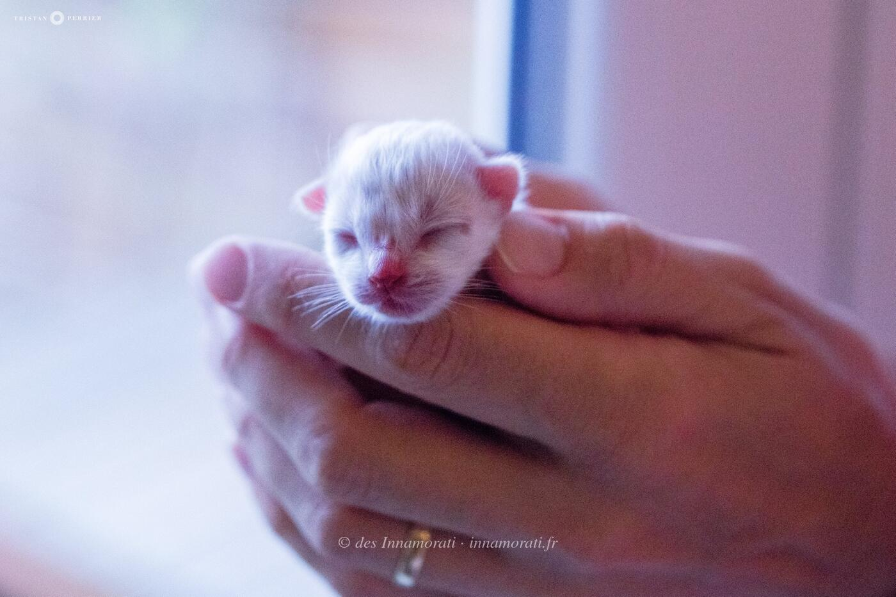
RobeMâle
Naissance29 juillet 2016
ParentsBlue Treasure's Jazzy × Jorel du Castel Walou
Album53 photos, de juillet 2016 à janvier 2017
Frères et sœursMarcello de la Tribu Birmane, Massimiliano de la Tribu Birmane, Mia Bella de la Tribu Birmane
Demi-frères et sœurspar son père : 2018 avec Mia Bella


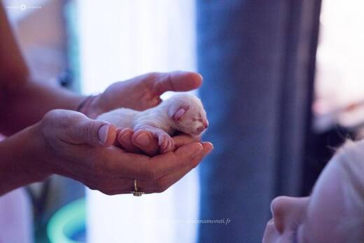

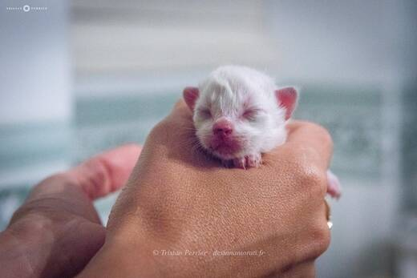

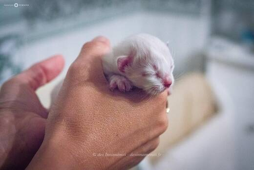

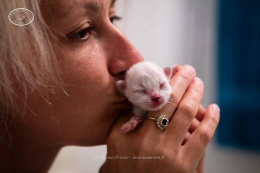


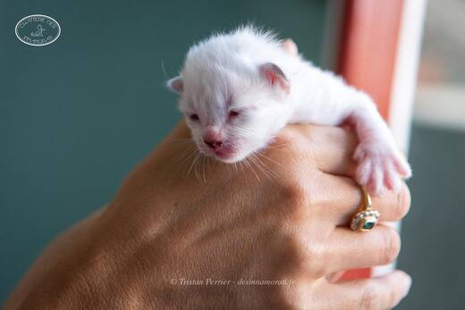


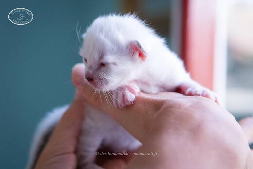

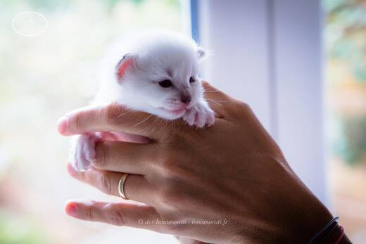

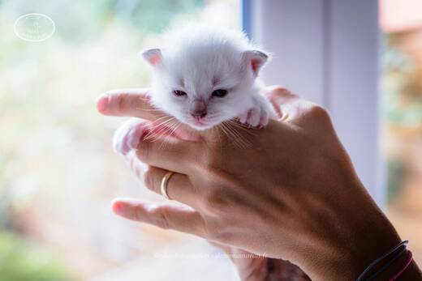

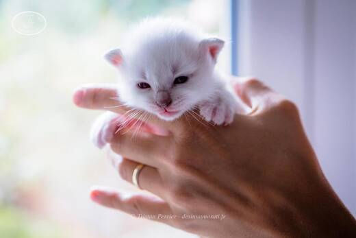

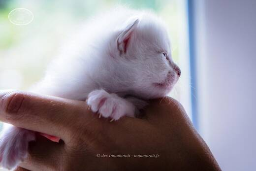

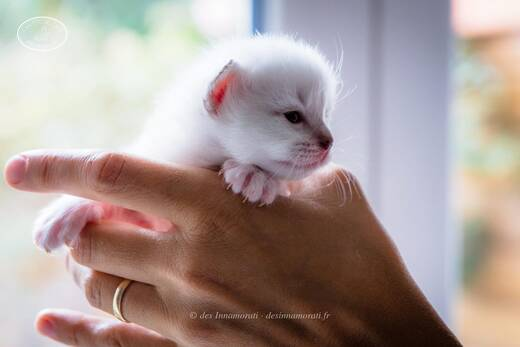

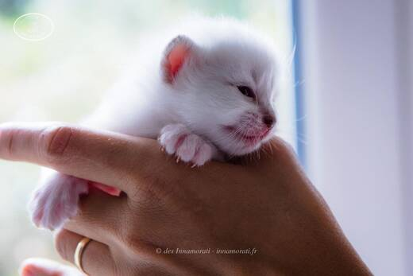

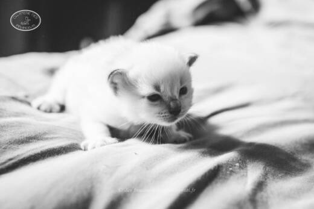

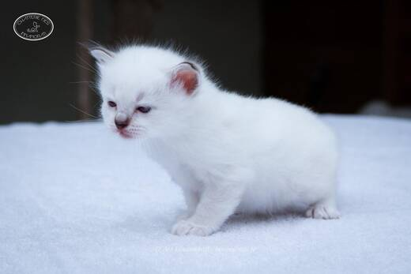

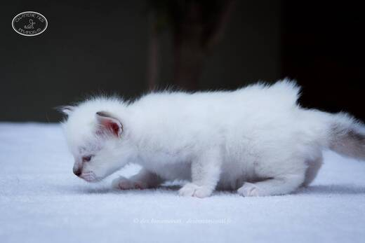

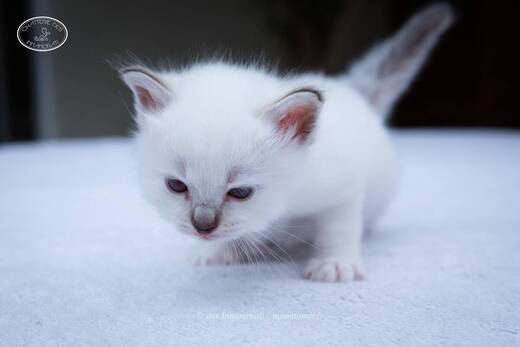

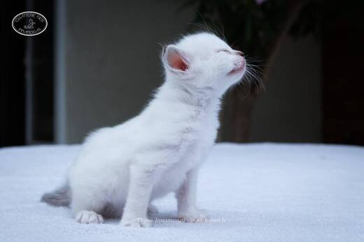

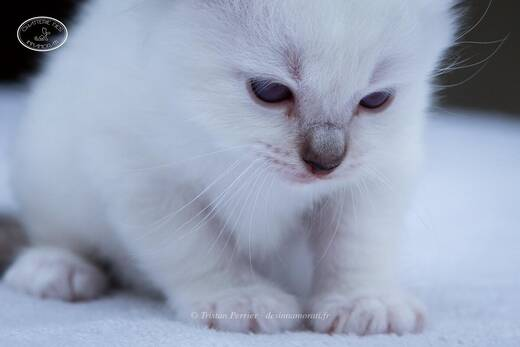

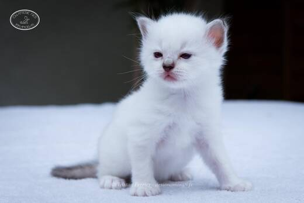

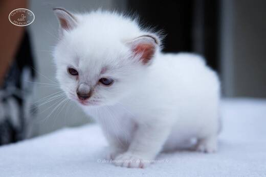

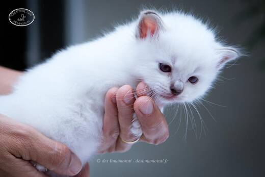

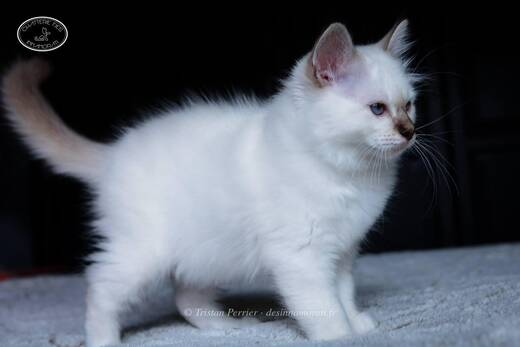

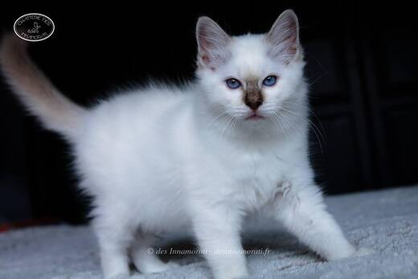

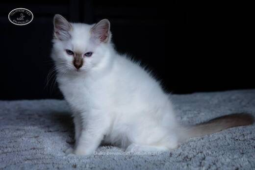

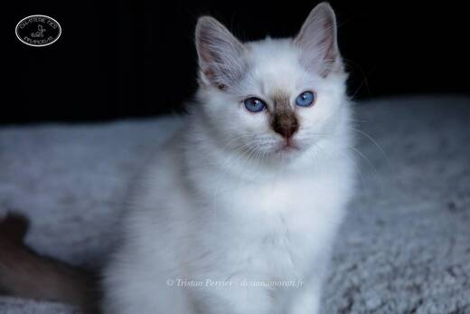

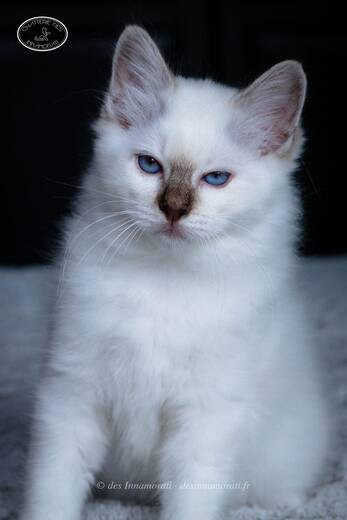

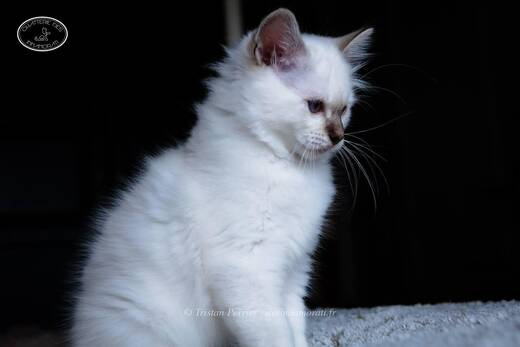

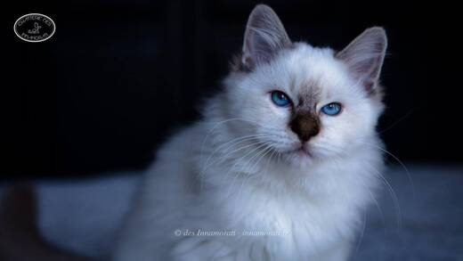

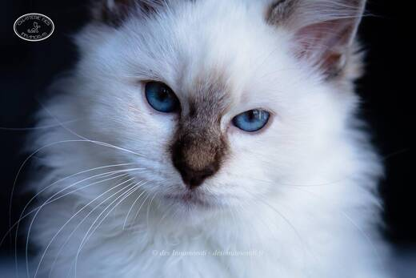

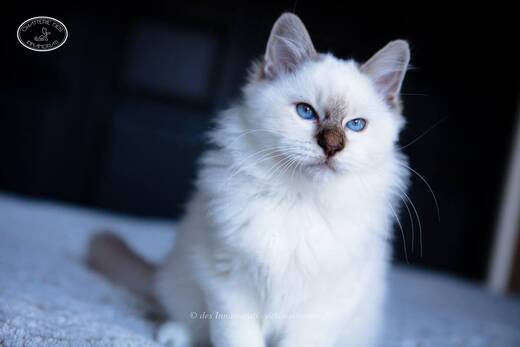

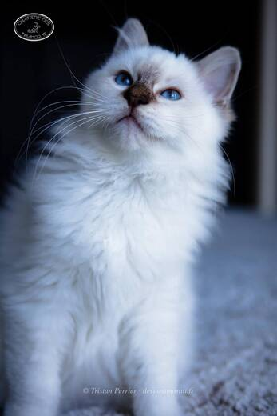

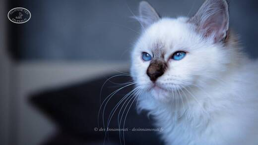

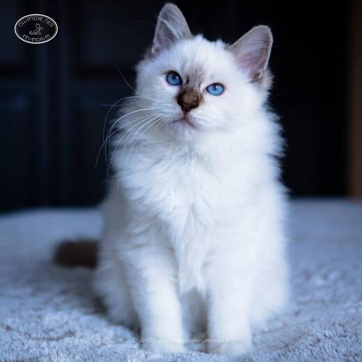

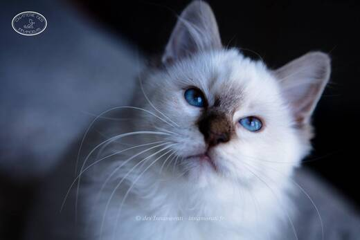

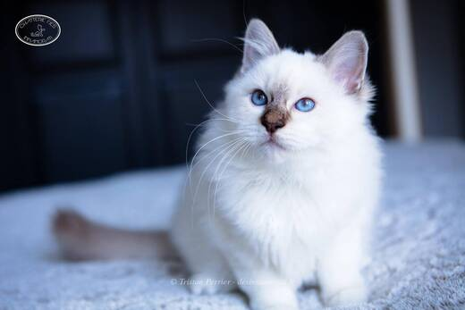

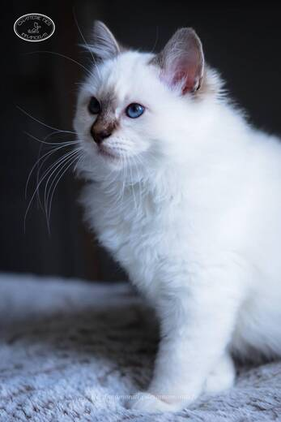

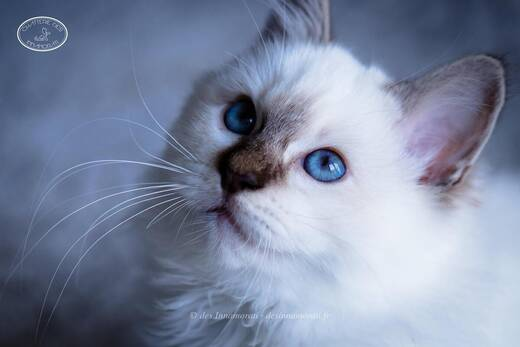

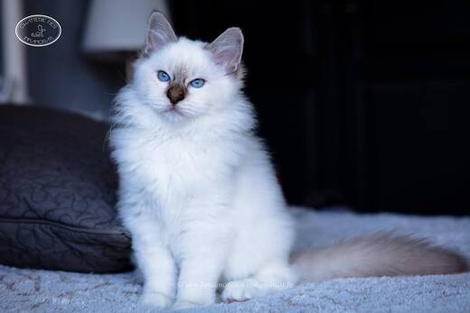

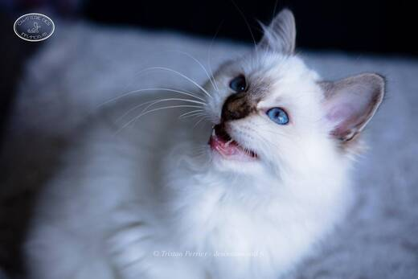

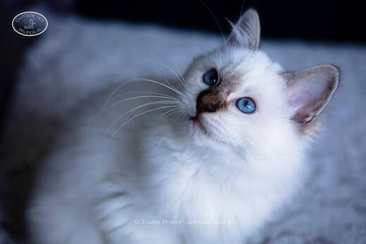

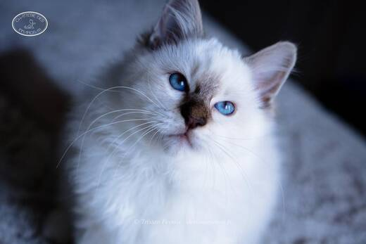

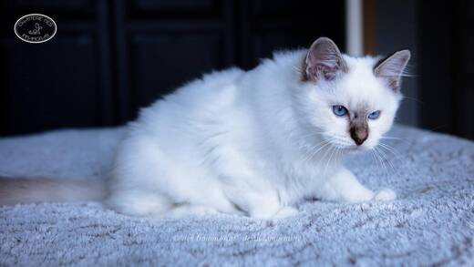

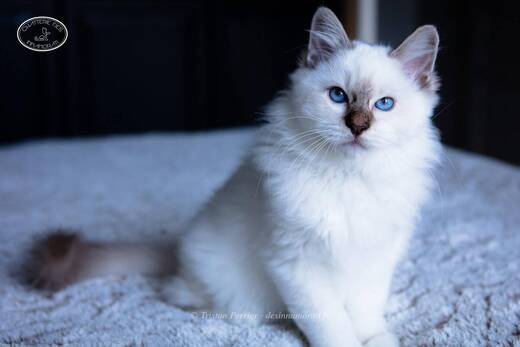

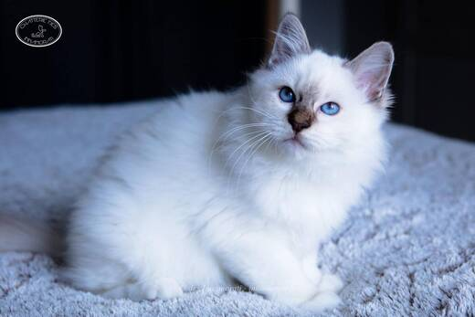

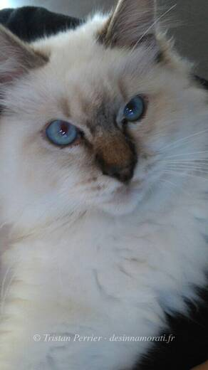

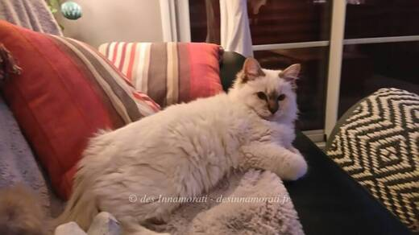

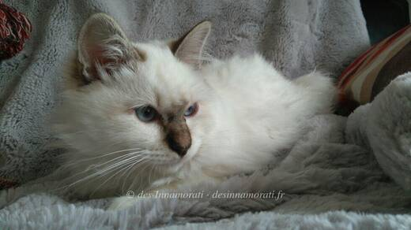
Photos réduites et marquées. Elles appartiennent à la Chatterie des Innamorati et ne peuvent pas être reprises dans une annonce.